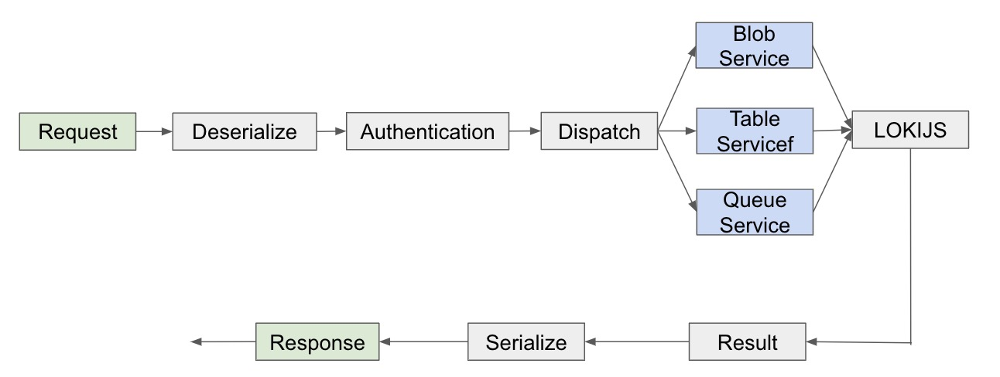

|
Table Service For Azurite
|
|
|
Overview
It was my intern project in Microsoft Shanghai. I was in the
Azure Storgae Team in Microsoft Shanghai Office.
Testing cost for applications deployed in Azure Storage can be
a huge budget for both internal and external developers. To
cut down the expenses, many developers are calling for a local
Azure Storage emulator. Previously we have Azure Storage
Emulator, however it has many limitations. It is
single-platform and also requires a lot of dependencies.
In order to solve current limitations, now we are working on
the new emulator which is cross-platform and much easier to
configure.
Azurite is now
the
offical recommended
local simulator for Azure Storage, which enables both internal
developers and external consumers to test their codes locally.
I am responsible for the table service part of Azurite. I
designed the structure according to the real Azure Storage and
simulated the low-level storage part with LokiJS, which is an
open source in-memory database. What’s more, I also designed
mechanisms to bulk process the data and solve consistency
problems. This project has received more than
700 stars on GitHub by now.
|
|
|
Azurite Table Service Workflow
|
|

|
|